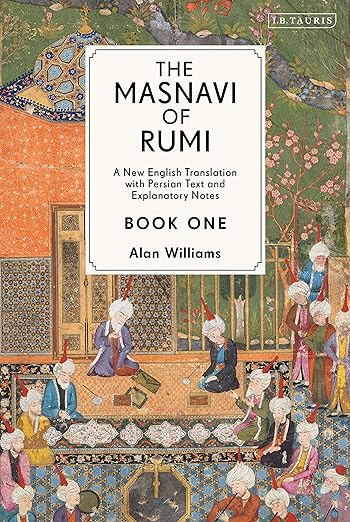

Shirin Ezzatpourghadim
This summer, I took my first trip to Disney World in Orlando. Stepping into the park, I felt like entering a world of magic and my childhood nostalgia. It made me feel like a kid again.
My Favorite Pets
- A dog named Tala
- A cat named Dizi
- A dog named Babri
My favorite restaurant is Ravagh because they serve the best Persian foods in the US! I always visit here when I go to NYC.

My favorite food is Zereshk Polo. In English, it can be translated as Barberry Rice with chicken. I like it to be served with Shirazi salad.
This dish is a staple in Persian cuisine, known for its unique combination of tangy barberries and savory chicken, all served on a bed of fluffy saffron rice.
My Favorite Books
| Book Name |
Cover |
Author |
Summary |
| The Alchemist |
 |
Paulo Coelho |
A journey of self-discovery following a shepherd as he pursues his personal legend. |
| The Masnavi of Rumi |
 |
Rumi |
The Masnavi of Rumi is a spiritual and philosophical epic poem that explores the deeper meanings of love, faith, and the soul. |
| Existential Psychotherapy |
 |
Irvin Yalom |
An exploration of existential psychology, focusing on human experiences of death, freedom, isolation, and meaning. |
| Blindness |
|
José Saramago |
A novel exploring the collapse of society after a sudden epidemic of blindness strikes. |